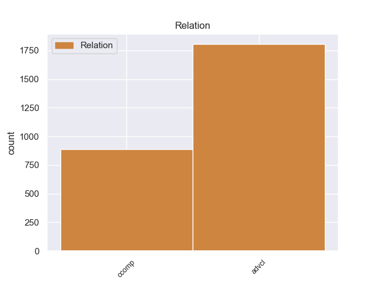
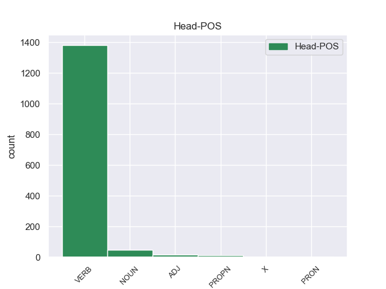
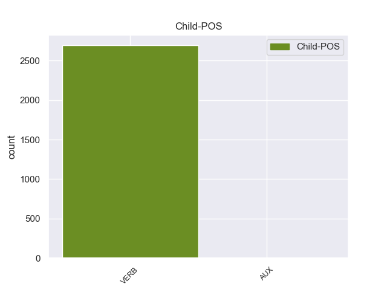

Distribution of features within this leaf



Morphosyntax Rules sorted by frequency.
- When the dependent token is the passive auxiliary(aux:pass) of the head token, the Tense needs to be Past.
1 En _ _ _ _ 0 _ _ _
2 estos _ _ _ _ 0 _ _ _
3 trabajos _ _ _ _ 0 _ _ _
4 se _ _ _ _ 0 _ _ _
5 pusieron _ _ _ _ 0 _ _ _
6 a _ _ _ _ 0 _ _ _
7 el _ _ _ _ 0 _ _ _
8 descubierto _ _ _ _ 0 _ _ _
9 25 _ _ _ _ 0 _ _ _
10 vanos _ _ _ _ 0 _ _ _
11 correspondientes _ _ _ _ 0 _ _ _
12 a _ _ _ _ 0 _ _ _
13 ventanas _ _ _ _ 0 _ _ _
14 saeteras _ _ _ _ 0 _ _ _
15 que _ _ _ _ 0 _ _ _
16 habían _ _ _ _ 0 _ _ _
17 sido ser AUX _ Gender=Masc|Number=Sing|Tense=Past|VerbForm=Part 18 aux:pass _ _
18 tapiadas tapiado VERB _ Gender=Fem|Number=Plur|Tense=Past|VerbForm=Part 0 _ _ _
19 en _ _ _ _ 0 _ _ _
20 los _ _ _ _ 0 _ _ _
21 siglos _ _ _ _ 0 _ _ _
22 anteriores _ _ _ _ 0 _ _ _
23 . _ _ _ _ 0 _ _ _
1 Con _ _ _ _ 0 _ _ _
2 miras _ _ _ _ 0 _ _ _
3 a _ _ _ _ 0 _ _ _
4 minimizar _ _ _ _ 0 _ _ _
5 cualquier _ _ _ _ 0 _ _ _
6 confusión _ _ _ _ 0 _ _ _
7 con _ _ _ _ 0 _ _ _
8 una _ _ _ _ 0 _ _ _
9 religión _ _ _ _ 0 _ _ _
10 , _ _ _ _ 0 _ _ _
11 el _ _ _ _ 0 _ _ _
12 uso _ _ _ _ 0 _ _ _
13 de _ _ _ _ 0 _ _ _
14 la _ _ _ _ 0 _ _ _
15 palabra _ _ _ _ 0 _ _ _
16 " _ _ _ _ 0 _ _ _
17 templo _ _ _ _ 0 _ _ _
18 " _ _ _ _ 0 _ _ _
19 para _ _ _ _ 0 _ _ _
20 describir _ _ _ _ 0 _ _ _
21 los _ _ _ _ 0 _ _ _
22 inmuebles _ _ _ _ 0 _ _ _
23 de _ _ _ _ 0 _ _ _
24 los _ _ _ _ 0 _ _ _
25 Shriners _ _ _ _ 0 _ _ _
26 ha _ _ _ _ 0 _ _ _
27 sido _ _ _ _ 0 _ _ _
28 reemplazado _ _ _ _ 0 _ _ _
29 por _ _ _ _ 0 _ _ _
30 la _ _ _ _ 0 _ _ _
31 frase _ _ _ _ 0 _ _ _
32 " _ _ _ _ 0 _ _ _
33 Centro _ _ _ _ 0 _ _ _
34 Shriner _ _ _ _ 0 _ _ _
35 " _ _ _ _ 0 _ _ _
36 , _ _ _ _ 0 _ _ _
37 aunque _ _ _ _ 0 _ _ _
38 en _ _ _ _ 0 _ _ _
39 capítulos _ _ _ _ 0 _ _ _
40 individuales _ _ _ _ 0 _ _ _
41 siguen seguir VERB _ Mood=Ind|Number=Plur|Person=3|Tense=Pres|VerbForm=Fin 0 _ _ _
42 siendo _ _ _ _ 0 _ _ _
43 nombrados nombrado VERB _ Gender=Masc|Number=Plur|Tense=Past|VerbForm=Part 41 xcomp _ _
44 como _ _ _ _ 0 _ _ _
45 " _ _ _ _ 0 _ _ _
46 templos _ _ _ _ 0 _ _ _
47 " _ _ _ _ 0 _ _ _
48 . _ _ _ _ 0 _ _ _
non-conforming Examples:
1 Al _ _ _ _ 0 _ _ _
2 final _ _ _ _ 0 _ _ _
3 , _ _ _ _ 0 _ _ _
4 Calvin _ _ _ _ 0 _ _ _
5 y _ _ _ _ 0 _ _ _
6 Rusty _ _ _ _ 0 _ _ _
7 , _ _ _ _ 0 _ _ _
8 así _ _ _ _ 0 _ _ _
9 como _ _ _ _ 0 _ _ _
10 los _ _ _ _ 0 _ _ _
11 otros _ _ _ _ 0 _ _ _
12 novatos _ _ _ _ 0 _ _ _
13 , _ _ _ _ 0 _ _ _
14 son ser AUX _ Mood=Ind|Number=Plur|Person=3|Tense=Pres|VerbForm=Fin 16 aux:pass _ _
15 nombrados _ _ _ _ 0 _ _ _
16 hermanos hermano NOUN _ Gender=Masc|Number=Plur 0 _ _ _
17 en _ _ _ _ 0 _ _ _
18 sus _ _ _ _ 0 _ _ _
19 respectivas _ _ _ _ 0 _ _ _
20 fraternidades _ _ _ _ 0 _ _ _
21 , _ _ _ _ 0 _ _ _
22 mientras _ _ _ _ 0 _ _ _
23 que _ _ _ _ 0 _ _ _
24 Frannie _ _ _ _ 0 _ _ _
25 se _ _ _ _ 0 _ _ _
26 marcha _ _ _ _ 0 _ _ _
27 y _ _ _ _ 0 _ _ _
28 crea _ _ _ _ 0 _ _ _
29 una _ _ _ _ 0 _ _ _
30 nueva _ _ _ _ 0 _ _ _
31 fraternidad _ _ _ _ 0 _ _ _
32 , _ _ _ _ 0 _ _ _
33 llevándo _ _ _ _ 0 _ _ _
34 se _ _ _ _ 0 _ _ _
35 a _ _ _ _ 0 _ _ _
36 muchas _ _ _ _ 0 _ _ _
37 de _ _ _ _ 0 _ _ _
38 las _ _ _ _ 0 _ _ _
39 hermanas _ _ _ _ 0 _ _ _
40 de _ _ _ _ 0 _ _ _
41 ΖΒΖ _ _ _ _ 0 _ _ _
42 con _ _ _ _ 0 _ _ _
43 ella _ _ _ _ 0 _ _ _
44 . _ _ _ _ 0 _ _ _
1 Está estar AUX _ Mood=Ind|Number=Sing|Person=3|Tense=Pres|VerbForm=Fin 2 aux:pass _ _
2 formada formado VERB _ Gender=Fem|Number=Sing|VerbForm=Part 0 _ _ _
3 por _ _ _ _ 0 _ _ _
4 tres _ _ _ _ 0 _ _ _
5 franjas _ _ _ _ 0 _ _ _
6 horizontales _ _ _ _ 0 _ _ _
7 de _ _ _ _ 0 _ _ _
8 igual _ _ _ _ 0 _ _ _
9 dimensión _ _ _ _ 0 _ _ _
10 , _ _ _ _ 0 _ _ _
11 la _ _ _ _ 0 _ _ _
12 franja _ _ _ _ 0 _ _ _
13 superior _ _ _ _ 0 _ _ _
14 es _ _ _ _ 0 _ _ _
15 de _ _ _ _ 0 _ _ _
16 color _ _ _ _ 0 _ _ _
17 verde _ _ _ _ 0 _ _ _
18 que _ _ _ _ 0 _ _ _
19 representa _ _ _ _ 0 _ _ _
20 la _ _ _ _ 0 _ _ _
21 vegetación _ _ _ _ 0 _ _ _
22 y _ _ _ _ 0 _ _ _
23 esperanza _ _ _ _ 0 _ _ _
24 de _ _ _ _ 0 _ _ _
25 el _ _ _ _ 0 _ _ _
26 municipio _ _ _ _ 0 _ _ _
27 , _ _ _ _ 0 _ _ _
28 en _ _ _ _ 0 _ _ _
29 el _ _ _ _ 0 _ _ _
30 extremo _ _ _ _ 0 _ _ _
31 izquierdo _ _ _ _ 0 _ _ _
32 de _ _ _ _ 0 _ _ _
33 la _ _ _ _ 0 _ _ _
34 franja _ _ _ _ 0 _ _ _
35 aparece _ _ _ _ 0 _ _ _
36 el _ _ _ _ 0 _ _ _
37 escudo _ _ _ _ 0 _ _ _
38 de _ _ _ _ 0 _ _ _
39 el _ _ _ _ 0 _ _ _
40 municipio _ _ _ _ 0 _ _ _
41 . _ _ _ _ 0 _ _ _
1 Estas _ _ _ _ 0 _ _ _
2 obras _ _ _ _ 0 _ _ _
3 son ser AUX _ Mood=Ind|Number=Plur|Person=3|Tense=Pres|VerbForm=Fin 4 aux:pass _ _
4 realizadas realizado VERB _ Gender=Fem|Number=Plur|VerbForm=Part 0 _ _ _
5 con _ _ _ _ 0 _ _ _
6 libros _ _ _ _ 0 _ _ _
7 , _ _ _ _ 0 _ _ _
8 álbumes _ _ _ _ 0 _ _ _
9 de _ _ _ _ 0 _ _ _
10 música _ _ _ _ 0 _ _ _
11 o _ _ _ _ 0 _ _ _
12 periódicos _ _ _ _ 0 _ _ _
13 como _ _ _ _ 0 _ _ _
14 soporte _ _ _ _ 0 _ _ _
15 . _ _ _ _ 0 _ _ _
1 Éste _ _ _ _ 0 _ _ _
2 último _ _ _ _ 0 _ _ _
3 abandonó _ _ _ _ 0 _ _ _
4 el _ _ _ _ 0 _ _ _
5 proyecto _ _ _ _ 0 _ _ _
6 antes _ _ _ _ 0 _ _ _
7 de _ _ _ _ 0 _ _ _
8 que _ _ _ _ 0 _ _ _
9 el _ _ _ _ 0 _ _ _
10 álbum _ _ _ _ 0 _ _ _
11 fuera ser AUX _ Mood=Sub|Number=Sing|Person=3|Tense=Imp|VerbForm=Fin 12 aux:pass _ _
12 editado editado VERB _ Gender=Masc|Number=Sing|VerbForm=Part 0 _ _ _
13 en _ _ _ _ 0 _ _ _
14 el _ _ _ _ 0 _ _ _
15 estudio _ _ _ _ 0 _ _ _
16 . _ _ _ _ 0 _ _ _
1 En _ _ _ _ 0 _ _ _
2 997 _ _ _ _ 0 _ _ _
3 murió _ _ _ _ 0 _ _ _
4 el _ _ _ _ 0 _ _ _
5 emir _ _ _ _ 0 _ _ _
6 buyida _ _ _ _ 0 _ _ _
7 Fajar _ _ _ _ 0 _ _ _
8 ad _ _ _ _ 0 _ _ _
9 - _ _ _ _ 0 _ _ _
10 Dawla _ _ _ _ 0 _ _ _
11 Ali _ _ _ _ 0 _ _ _
12 , _ _ _ _ 0 _ _ _
13 lo _ _ _ _ 0 _ _ _
14 que _ _ _ _ 0 _ _ _
15 permitió permitir VERB _ Mood=Ind|Number=Sing|Person=3|Tense=Past|VerbForm=Fin 0 _ _ _
16 a _ _ _ _ 0 _ _ _
17 Baha _ _ _ _ 0 _ _ _
18 ad _ _ _ _ 0 _ _ _
19 - _ _ _ _ 0 _ _ _
20 Dawla _ _ _ _ 0 _ _ _
21 Firuz _ _ _ _ 0 _ _ _
22 reforzar reforzar VERB _ Mood=Ind|Number=Sing|Person=3|Tense=Pres|VerbForm=Fin 15 xcomp _ _
23 su _ _ _ _ 0 _ _ _
24 posición _ _ _ _ 0 _ _ _
25 en _ _ _ _ 0 _ _ _
26 Fars _ _ _ _ 0 _ _ _
27 . _ _ _ _ 0 _ _ _